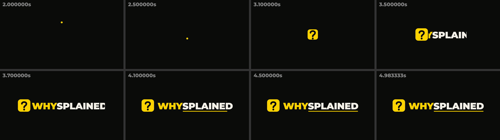

Who is this for? Shorts viewers who scroll past in under a second. What does it say? "A question gets answered here." Does it need a name? Yes, the reveal exists to teach the name.
A dot falls, a ? draws up from it, a yellow tile grows, the name emerges from the tile, and an underline lands under SPLAINED. Every move means something (question, then answer), and the end frame works as an avatar and watermark.
Why it won: it is the only one where the motion says what the channel does. It also leaves a reusable mark.

"WHY?" types on, the ? backspaces, and SPLAINED types in. Clear, but it is type-only, gives no mark for the avatar, and looks like every caption tool.
The name sits in white and a yellow marker swipes across WHY. On-brand with the captions, but it is static and generic, and it does not show question to answer.